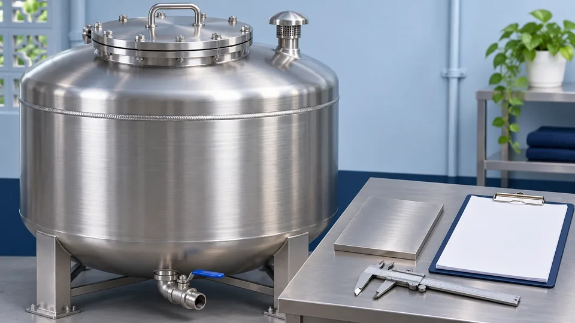

ถังเก็บน้ำสแตนเลส เลือกแบบไหนดี ขนาดกี่ลิตรถึงพอใช้
ถังสแตนเลสที่เหมาะสมต้องเลือกจากน้ำที่เก็บ ความจุ พื้นที่ และแบบของถัง บทความนี้พาเช็กเกรดวัสดุ รอยเชื่อม การสำรองน้ำและการดูแล เพื่อเลือกถังสำหรับบ้าน อาคาร หรือระบบประปาชุมชนได้ตรงงาน โดยไม่สับสนระหว่างคุณสมบัติวัสดุกับสเปกสินค้าจริง

สารบัญ
ถังเก็บน้ำสแตนเลสคืออะไร เหมาะกับน้ำแบบไหน?
ถังเก็บน้ำสแตนเลส หรือแทงค์น้ำสำรอง เป็นภาชนะสำหรับเก็บพักน้ำก่อนส่งไปใช้งาน โดยมีตัวถัง ฝาปิด จุดต่อท่อ และอุปกรณ์ตามแบบของรุ่น สำหรับงานที่ Sunnex เน้น คือการเก็บ น้ำสะอาด น้ำประปา และน้ำหลังผ่านกระบวนการกรอง ในอาคาร หมู่บ้าน และหน่วยงาน
ระบบประปาอาจมีทั้งถังพักน้ำดิบก่อนกรองและถังเก็บน้ำหลังปรับคุณภาพ ซึ่งมีหน้าที่ต่างกันและต้องแยกทางน้ำให้ชัด ถังเก็บน้ำไม่ใช่อุปกรณ์บำบัด จึงไม่ได้กำจัดตะกอน สารละลาย หรือเชื้อโรคแทนระบบกรองและฆ่าเชื้อ
หากกำลังวางจุดเก็บน้ำหลังกรอง ดู ถังเก็บน้ำสแตนเลสของ Sunnex เพื่อประเมินความจุและการเชื่อมต่อร่วมกับ เครื่องกรองน้ำประปา การเลือกถังให้ตรงกับน้ำที่เก็บตั้งแต่ต้น ช่วยให้กำหนดงานฐาน ปั๊ม และท่อได้ชัดเจนขึ้น
เลือกถังแนวตั้ง แนวนอน หรือพื้นถังแบบไหนดี?
เริ่มจากวัดพื้นที่จริง ทั้งความกว้าง ความสูง ทางขนย้าย และระยะเปิดฝาตรวจ รูปทรงที่ใส่ในพื้นที่ได้ไม่ได้หมายความว่าฐานหรือโครงสร้างเดิมรับน้ำหนักได้ ต้องประเมินถังเมื่อบรรจุน้ำเต็มร่วมด้วย
| ลักษณะถัง | ใช้พิจารณาเมื่อ | สิ่งที่ต้องตรวจ |
|---|---|---|
| แนวตั้ง / ทรงสูง | ต้องการใช้พื้นที่ฐานอย่างเหมาะสมและมีความสูงเพียงพอ | ความสูงรวม ขาตั้ง ฝาปิด การเข้าตรวจ และฐานรับน้ำหนัก |
| แนวนอน | พื้นที่จำกัดความสูงและมีความยาวพอวางถัง | ฐานรองรับตามแบบ จุดต่อ และทางยกวาง |
| พื้นนูน / พื้นเรียบ | ต้องการเปรียบเทียบระดับติดตั้งและการระบาย | ตำแหน่งท่อระบาย ปริมาณน้ำค้าง และวิธีล้างของรุ่นจริง |
| ถังหุ้มฉนวน / งานพิเศษ | มีข้อกำหนดควบคุมอุณหภูมิหรือกระบวนการเฉพาะ | แบบ พิกัดอุณหภูมิและอุปกรณ์ ไม่ถือเป็นคุณสมบัติของถังน้ำทั่วไป |
รายการข้างต้นเป็นแนวทางเปรียบเทียบรูปแบบ ไม่ใช่การยืนยันว่ามีสินค้าทุกทรงหรือทุกระบบ ถังเก็บน้ำทั่วไปไม่ได้เป็นถังแรงดัน ถังน้ำร้อน หรือถังรองรับ CIP โดยอัตโนมัติ หากต้องการงานเฉพาะควรระบุในข้อกำหนดก่อนขอราคา
เลือกเกรดสแตนเลสและตรวจมาตรฐานอย่างไร?
ชื่อเกรดเป็นจุดเริ่มต้น แต่ต้องดูคุณภาพน้ำ งานเชื่อม และการออกแบบร่วมกัน สมาคมสแตนเลสอังกฤษ BSSA ระบุว่ากลุ่ม 304 และ 316 ใช้กับน้ำดื่มเย็นหรือไม่ผ่านความร้อนได้โดยทั่วไป เมื่อออกแบบ ผลิต และตกแต่งผิวเหมาะสม พร้อมอธิบายปัจจัยความเสี่ยงอย่างคลอไรด์และอุณหภูมิ
- เกรดวัสดุ: ขอเอกสารระบุเกรดของตัวถังและส่วนสัมผัสน้ำ ไม่สรุปว่าเป็น 304 หรือ 316L จากผิวเงา
- โครงสร้างและความหนา: ดูแบบของถัง ความจุ ฐานรอง และเงื่อนไขใช้งาน ไม่ตัดสินความแข็งแรงจากความหนาเพียงค่าเดียว
- รอยเชื่อมและจุดอับ: ตรวจสภาพรอยต่อ จุดระบาย ฝาปิด และทางเข้าตรวจ เพื่อให้บำรุงรักษาได้
- เอกสารมาตรฐาน: ตรวจชื่อผู้ผลิต รุ่น ขอบข่ายและหลักฐานให้ตรงกับสินค้าที่เลือก
สมอ. มีรายการหลักเกณฑ์สำหรับถังเหล็กกล้าไร้สนิมเก็บน้ำตาม มอก. 989-2562 การกล่าวถึงมาตรฐานนี้เป็นคำแนะนำในการตรวจเลือกสินค้า ไม่ใช่การระบุว่าถังสแตนเลสของ Sunnex ทุกรุ่นได้รับใบอนุญาตแล้ว

ถังสแตนเลส 304 ดูอย่างไร แม่เหล็กเชื่อได้ไหม?
แม่เหล็กอย่างเดียวใช้ยืนยันเกรด 304 ไม่ได้ สแตนเลสบางชนิดอาจเกิดการดูดแม่เหล็กมากขึ้นหลังขึ้นรูปเย็น ตามคำอธิบายเรื่อง ผลของการขึ้นรูปต่อสมบัติแม่เหล็กจาก BSSA จึงไม่ควรใช้ผลดูดหรือไม่ดูดเป็นข้อสรุปว่าเป็นของแท้หรือไม่ใช่ 304
วิธีซื้อที่ตรวจสอบได้มากกว่าคือขอเอกสารวัสดุที่ผูกกับรุ่นหรือชิ้นงาน ตรวจข้อมูลผู้ผลิต และให้ผู้เชี่ยวชาญเลือกวิธีตรวจยืนยันเมื่อโครงการจำเป็น ไม่แนะนำให้หยดกรดหรือน้ำยาที่ไม่ทราบข้อกำหนดลงบนผิวสัมผัสน้ำของถังใช้งานเอง
ถังเก็บน้ำขนาดกี่ลิตรถึงพอใช้?
เริ่มจาก ปริมาณน้ำที่ใช้ต่อวัน × จำนวนวันที่ต้องการสำรอง แล้วประเมินช่วงใช้น้ำสูงสุด อัตราเติม ระดับน้ำที่นำออกมาใช้ไม่ได้ และน้ำเผื่อ การคูณจำนวนคนด้วยค่าประมาณเพียงอย่างเดียวจึงยังไม่ใช่การออกแบบที่ครบถ้วน
ตัวอย่างบ้านพัก: ใช้ 200 ลิตรต่อคนเป็นสมมติฐาน
บ้าน 4 คน สมมติใช้น้ำคนละ 200 ลิตรต่อวัน ต้องการสำรองหนึ่งวัน จะได้ 4 × 200 × 1 = 800 ลิตร จึงนำถังเก็บน้ำ 1,000 ลิตรมาพิจารณาต่อได้ โดยตรวจความจุใช้งานและน้ำเผื่อ หากสำรองสองวัน ปริมาณตั้งต้นเป็น 1,600 ลิตร ก่อนเลือกรุ่นที่เหมาะสม ตัวเลขนี้เป็นตัวอย่าง ไม่ใช่เกณฑ์บังคับของทุกบ้าน
ถังเก็บน้ำ 500 ลิตรอาจเป็นตัวเลือกสำหรับจุดใช้ที่มีปริมาณน้อย ส่วนถังเก็บน้ำ 1,000 ลิตรหรือ 2,000 ลิตรต้องเทียบกับปริมาณใช้จริง ไม่ควรรับรองว่าเพียงพอตามจำนวนคนโดยไม่ดูการใช้งานและความถี่เติมน้ำ
สำหรับ ถังเก็บน้ำชุมชนและถังสำรองน้ำหมู่บ้าน ให้ใช้ปริมาณน้ำทั้งพื้นที่และช่วงใช้น้ำมาก เช่น หากใช้ 6,000 ลิตรต่อวันและต้องการสำรองหนึ่งวัน ปริมาณเริ่มต้นคือ 6 คิว ก่อนประเมินส่วนเผื่อ ขนาดในตัวอย่างไม่ใช่รายการถังสแตนเลสที่ยืนยันว่ามีจำหน่ายทุกความจุ
1 คิว หรือ 1 ลูกบาศก์เมตร เท่ากับ 1,000 ลิตร เป็นหน่วยความจุ ต่างจากกำลังผลิตต่อชั่วโมงของ โรงกรองน้ำประปา 12Q ควรนำอัตราผลิตและชั่วโมงเดินระบบมาประเมินถังพักร่วมกัน
ตำแหน่งติดตั้งและส่วนประกอบที่ควรเช็ก
- ฐานและพื้นที่: ประเมินน้ำหนักถังเมื่อบรรจุน้ำเต็ม ตรวจฐาน โครงสร้าง ทางขนย้าย และจุดยกวาง
- ท่อเข้า–ออก: กำหนดขนาด ตำแหน่ง และการรองรับท่อตามแบบ ไม่ให้เกิดแรงฝืนที่จุดต่อ
- ท่อน้ำล้นและระบาย: วางให้ตรวจได้ ระบายน้ำไปยังจุดเหมาะสม และล้างได้ตามข้อกำหนด
- ฝาปิดและช่องระบายอากาศ: ป้องกันสิ่งสกปรกพร้อมให้อากาศเข้า–ออกตามแบบ ไม่ปิดถังธรรมดาให้กลายเป็นภาชนะอัดแรงดัน
- ควบคุมระดับและปั๊ม: ตรวจลูกลอยหรือระบบควบคุมตามรายการของรุ่น และการป้องกันปั๊มเมื่อน้ำไม่พอ
หากต้องการความต่อเนื่องช่วงไฟดับ ต้องตรวจทางจ่ายน้ำด้วย ถ้าพึ่งปั๊มไฟฟ้าทางเดียว แม้มีน้ำในถังก็อาจส่งถึงจุดใช้ไม่ได้ ดู ปั๊มน้ำสำหรับงานระบบ และส่งข้อมูลระดับพื้นที่ ระยะส่ง และปริมาณจ่ายให้ทีมงานประเมินร่วมกัน
ใช้กับน้ำบาดาล น้ำกร่อย หรือน้ำทะเลได้ไหม?
ไม่ควรตัดสินจากคำว่าน้ำบาดาลเพียงอย่างเดียว เพราะแต่ละแหล่งมีคุณภาพต่างกัน แต่ก็ไม่ควรนำถังสแตนเลสทั่วไปไปเก็บน้ำกร่อย น้ำเกลือ น้ำทะเล หรือสารเคมีโดยไม่ตรวจข้อกำหนด น้ำที่มีคลอไรด์ อุณหภูมิ และสภาพใช้งานต้องได้รับการประเมินร่วมกับวัสดุและแบบถัง
แนวทางของสินค้าสแตนเลสในเว็บ Sunnex เน้นน้ำสะอาด น้ำประปา และน้ำหลังกรอง หากเริ่มจากบ่อบาดาล ควรประเมิน ระบบกรองน้ำบาดาล และคุณภาพน้ำหลังปรับสภาพก่อนเลือกถัง ถ้าต้องการเปรียบเทียบวัสดุ ดู ถังไฟเบอร์กลาส FRP และ ถัง PVC/พลาสติก ตามข้อกำหนดของแต่ละรุ่น
สแตนเลสไม่ใช่คำรับรองว่าไม่เป็นสนิมตลอดไป หรือใช้งานได้นานเกิน 20 ปีทุกกรณี อายุใช้งานต้องดูวัสดุ การผลิต น้ำ การติดตั้ง และการบำรุงรักษา จึงควรตรวจอาการผิดปกติและเงื่อนไขรับประกันจริง
ล้างถังบ่อยแค่ไหน และดูแลอย่างไร?
ถังเก็บน้ำยังต้องล้าง แม้ตัวถังทึบแสงหรือใช้น้ำที่ผ่านการกรองแล้ว การทึบแสงไม่ใช่การรับรองว่าปลอดจุลินทรีย์หรือตะกอนเสมอ กปน. แนะนำให้ล้างถังพักน้ำอย่างน้อยทุก 6 เดือน โดยงานที่มีตะกอนหรือคุณภาพน้ำเปลี่ยนควรประเมินรอบตรวจเพิ่มเติมตามสภาพใช้งานและคู่มือ
- ตรวจฝาปิด ช่องเปิด จุดต่อ รอยเชื่อม และรอยรั่วตามรอบ
- บันทึกสภาพน้ำ ตะกอน และการทำงานของอุปกรณ์ควบคุมระดับ
- ให้ผู้ดูแลเลือกวิธีและสารล้างที่เหมาะกับเกรดวัสดุและข้อกำหนด ไม่ใช้สารเข้มข้นหรือวิธีขัดที่ผู้ผลิตห้าม
- งานที่ต้องเข้าภายในถังควรใช้ผู้ปฏิบัติงานที่มีความพร้อมและมาตรการสำหรับพื้นที่อับอากาศ ไม่ลงไปทำเองโดยลำพัง
อ่าน การดูแลระบบประปาหมู่บ้าน เพื่อวางแผนร่วมกับปั๊ม ท่อ และระบบกรอง หากน้ำมีกลิ่นหรือขุ่นให้หาต้นเหตุทั้งระบบ ไม่สรุปว่าเปลี่ยนถังแล้วจะแก้ได้ทั้งหมด
ราคาถังสแตนเลสและข้อมูลที่ควรส่งก่อนขอราคา
การเทียบถังเก็บน้ำ 1,000 ลิตร ราคา หรือการมองหาถังเก็บน้ำราคาถูก ควรเทียบวัสดุ ความจุใช้งาน แบบ รอยเชื่อม อุปกรณ์ ขนส่ง ฐาน และติดตั้งในขอบเขตเดียวกัน ราคาหรือระยะรับประกันจากถังอีกยี่ห้อจึงไม่ใช่ราคาหรือเงื่อนไขของทุกรุ่น
- น้ำที่เก็บและผลตรวจที่มี โดยเฉพาะน้ำที่ไม่ใช่น้ำประปาปกติ
- ความจุหรือปริมาณใช้ต่อวัน ระยะเวลาสำรอง และช่วงใช้มาก
- ภาพพื้นที่ ขนาดทางเข้า ฐาน และระยะเปิดฝาตรวจ
- ข้อมูลปั๊ม ท่อ จุดต่อและจังหวัดติดตั้ง
- ข้อกำหนดเกรดวัสดุ เอกสาร รายการส่งมอบและรับประกันของโครงการ
สำหรับถังเก็บน้ำสำหรับ อบต. หน่วยงานราชการ หรือชุมชน Sunnex ช่วยประเมินการเชื่อมต่อกับระบบที่มีอยู่และจัดรายการเสนอราคาให้เห็นขอบเขตชัดเจน เริ่มจาก ดูถังเก็บน้ำประปาสแตนเลสและสอบถามทีมงาน ก่อนตัดสินใจเลือกรุ่น
คำถามที่พบบ่อยเกี่ยวกับถังเก็บน้ำสแตนเลส
ถังเก็บน้ำสแตนเลส 304 เป็นสนิมได้ไหม?
มีโอกาสได้ ขึ้นกับน้ำ คลอไรด์ อุณหภูมิ รอยเชื่อม การออกแบบและการดูแล ต้องเลือกวัสดุและใช้งานตามข้อกำหนด ไม่ใช้ชื่อเกรดรับรองว่าไม่เกิดสนิมทุกกรณี
ใช้แม่เหล็กดูว่าเป็นสแตนเลส 304 ได้หรือไม่?
แม่เหล็กอย่างเดียวใช้ยืนยันเกรดไม่ได้ การขึ้นรูปอาจเปลี่ยนสมบัติแม่เหล็ก ควรตรวจเอกสารวัสดุและให้ผู้เชี่ยวชาญเลือกวิธีตรวจยืนยันเมื่อจำเป็น
บ้าน 4 คนต้องใช้ถังเก็บน้ำ 1,000 ลิตรเสมอไหม?
ไม่เสมอ ต้องดูปริมาณใช้จริง ระยะเวลาสำรอง อัตราเติมและน้ำเผื่อ ตัวอย่าง 4 คนคูณ 200 ลิตรเป็นเพียงสมมติฐานเบื้องต้น ไม่ใช่เกณฑ์เดียวสำหรับทุกบ้าน
ถังเก็บน้ำสแตนเลสใช้กับน้ำหลังกรองได้ไหม?
ใช้ประเมินเก็บน้ำหลังกรองได้เมื่อวัสดุและแบบเหมาะกับคุณภาพน้ำ แต่การเก็บหลังกรองไม่ได้รับรองว่าน้ำดื่มได้ ต้องดูระบบทั้งหมดและผลตรวจ
ถังสแตนเลสเก็บน้ำบาดาลได้หรือไม่?
ต้องตรวจคุณภาพน้ำและข้อกำหนดของรุ่นก่อน ไม่เหมารวมว่าน้ำบาดาลทุกแห่งเหมือนกัน หากมีความกร่อยหรือเงื่อนไขนอกข้อกำหนดให้ผู้ผลิตประเมินก่อน
ถังน้ำทึบแสงยังต้องล้างไหม?
ยังต้องล้างและตรวจสภาพ กปน. แนะนำล้างถังพักน้ำอย่างน้อยทุก 6 เดือน ร่วมกับประเมินรอบตามตะกอน คุณภาพน้ำ และคู่มือ
ถังเก็บน้ำสแตนเลสทั่วไปใช้รับแรงดันหรือน้ำร้อนได้เลยไหม?
ไม่ได้โดยอัตโนมัติ ต้องยืนยันแบบและพิกัดเฉพาะ ถังน้ำทั่วไปไม่ใช่การรับรองถังแรงดัน ฉนวน น้ำร้อน หรือระบบ CIP
มีถังสำรองแล้ว ไฟดับยังใช้น้ำได้ไหม?
ขึ้นกับทางจ่ายน้ำ หากยังพึ่งปั๊มไฟฟ้าเพียงทางเดียว อาจจ่ายไม่ได้แม้มีน้ำอยู่ ต้องประเมินระบบสำรองตามหน้างาน